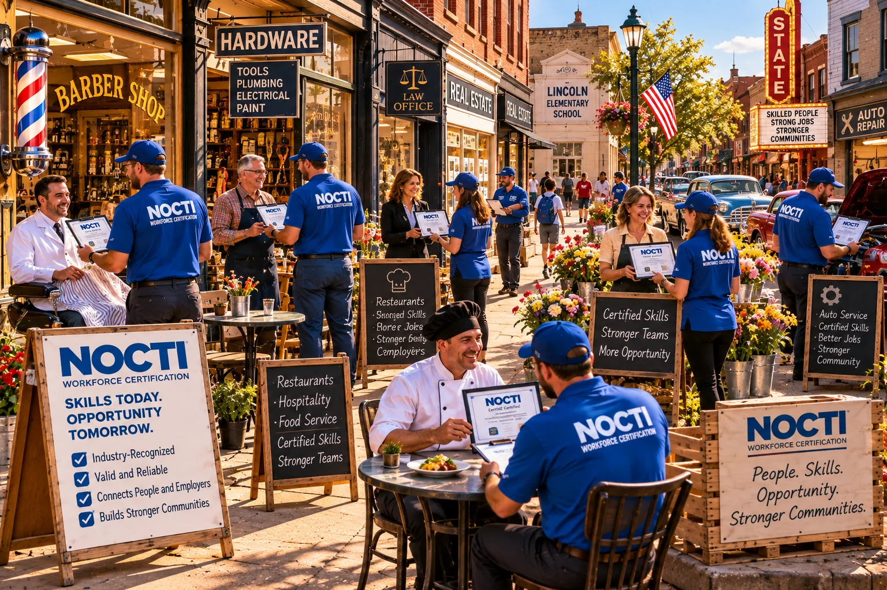

Millions of people are asking. Employers are asking it about them. NOCTI, a nonprofit, is ready to build the answer, and we’re inviting a few founding sponsors to help.
Am I AI-ready? How would I know?
You may not know NOCTI, but you’ve probably relied on it.
For 60 years, NOCTI, a nonprofit, has built the certifications that let people trust someone they’ve never met, across hundreds of industries.
How do you know the person grooming your dog is good at it? How do you know the mechanic working on your car knows what they’re doing? We’ve lived in that world for a long time.
NOCTI isn’t a training organization, and it isn’t an employment agency. It’s a certification organization. Our work is creating trust between two parties who don’t know each other.


Now that trust gap is everywhere.
Recently, workforce partners started coming to us with a new question, and we recognized it immediately. It’s the same trust gap we’ve been closing for decades, and now it lives here, with the rapid arrival of AI.
But this time it isn’t one industry or one vertical. It’s everybody. Employers say they want people with AI skills, but they don’t know who has them. Ask the person across the interview table, and they’ll tell you they don’t know either.
“Am I AI-ready? How would I know?”
Think about the driver’s license.
Imagine if there were no driving lessons and no license at all. Imagine how different every driver on the road would be.
A driver’s license doesn’t make anyone a perfect driver. People still roll through stops and speed a little. What it does is let strangers trust each other on the same road. Everyone knows the other drivers have learned the rules, and that shared trust is what makes people comfortable.
An AI-readiness certification is like a driver’s license in many respects, not all. It won’t be mandated. But there is no government license for working with AI, and it shouldn’t be left to the AI companies to define one. This is the next best thing: shared trust between strangers.
We know how to bridge trust gaps. We build certifications.
So that’s what we want to do. NOCTI is ready to build an AI-readiness certification, as we have for 60 years, and make it available through workforce and education partners across the country.
It won’t be tied to any one tool. The baseline verifies that people can handle AI’s rapid change, so it stays relevant as the technology moves.
The certification is the unlock: people can prove they’re ready, employers can hire with confidence, and hiring starts to flow.

And this is only the foundation.
Shared trust in a world where AI keeps evolving will take more than a single credential. Like a commercial driver’s license, the baseline opens the way to occupation-specific AI endorsements across NOCTI’s catalog of hundreds of certifications.
Refresher certifications can give people a way to show their skills are current, for schools, employers and workforce programs to use as they see fit.
These are certifications with deep historical precedent, now infused with the new human amplification technology of AI. We’re just getting started.
This is how we get started, and we need your help.
We want to do this quickly, because AI is changing faster than any workforce standard ever has.
We’re inviting a small number of founding sponsors to make it happen, through a nonprofit sponsorship of NOCTI’s work to build the AI-readiness certification.
If this is interesting to you, on your own or with a few others, we’d welcome a conversation and are glad to share the details.
Conversations are arranged by Todd Beetcher, who is helping NOCTI connect with founding sponsors.